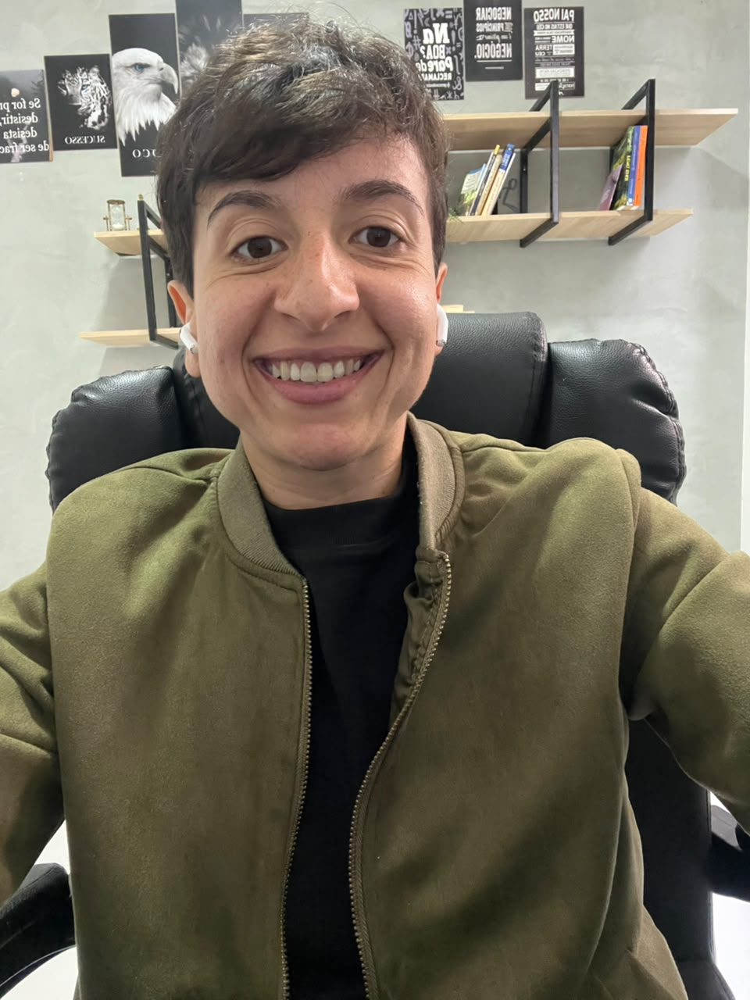

Estratégia, marketing, tecnologia e automação para transformar ideias e negócios em estruturas que vendem.
Da presença digital à automação de processos. Eu conecto estratégia e execução para construir a estrutura que o seu negócio precisa — seja para se posicionar, ser encontrado, atrair clientes, vender, automatizar ou tirar uma nova ideia do papel.
Você não precisa saber qual ferramenta ou serviço contratar.
Primeiro entendemos o que precisa mudar. Depois desenhamos a estratégia, a tecnologia e a execução necessárias para chegar lá.
Quero me posicionar melhor
Presença digital, comunicação, site, conteúdo e estrutura para sua marca transmitir mais valor e autoridade.
Posicionamento e presença →Quero ser encontrado no Google
SEO, SEO local, Google Meu Negócio, páginas estratégicas e estrutura para construir aquisição orgânica.
Google e SEO →Quero atrair mais clientes
Meta Ads, Google Ads, páginas, formulários, criativos e funis pensados para aquisição e conversão.
Aquisição →Quero vender melhor
CRM, processo comercial, qualificação, follow-up, scripts e organização da jornada até a venda.
Vendas e CRM →Quero automatizar processos
Make, n8n, integrações, webhooks e workflows para conectar sistemas e reduzir tarefas manuais.
Automação →Quero implementar IA
IA para atendimento, qualificação, agentes, WhatsApp, CRM e processos personalizados para sua operação.
Inteligência Artificial →Quero tirar uma ideia do papel
Estratégia, oferta, estrutura digital, página, funil, tecnologia e aquisição para transformar a ideia em operação.
Projetos digitais →Quero vender meu conhecimento
Estruturação de cursos e mentorias, oferta, página de vendas, VSL, funil, automações e campanhas.
Produtos digitais →Não é sobre contratar uma ferramenta. É sobre construir a estrutura certa.
Um projeto pode precisar de uma página. Outro, de SEO. Outro, de CRM, automação e IA trabalhando juntos. A solução nasce do problema — não de um pacote pronto.
Do problema à operação.
O objetivo é criar algo que funcione no mundo real e que possa evoluir com o negócio.
Entender cenário, objetivo, gargalos e oportunidades.
Definir o que precisa ser construído, melhorado ou conectado.
Colocar páginas, campanhas, automações e processos para funcionar.
Acompanhar dados, corrigir gargalos e evoluir a estrutura.

Estratégia • Marketing • Tecnologia • Automação
Eu sou Fábia Fialho.
Trabalho unindo estratégia, marketing e tecnologia para construir soluções que façam sentido para cada negócio.
Não parto de uma ferramenta ou de um serviço pronto. Primeiro entendo o que precisa ser resolvido. A solução pode estar em posicionamento, site, SEO, tráfego, automação, inteligência artificial, CRM, processo comercial ou na integração de várias dessas áreas.
Meu trabalho é transformar problemas e ideias em estruturas que funcionam — e que vendem.
Falar comigoTem uma ideia, um problema ou algo que precisa funcionar melhor?
Você não precisa chegar com a solução pronta. Me conte o cenário e o que pretende alcançar. A partir disso, identificamos qual estrutura faz sentido para o seu projeto.
Contar sobre meu projeto no WhatsApp